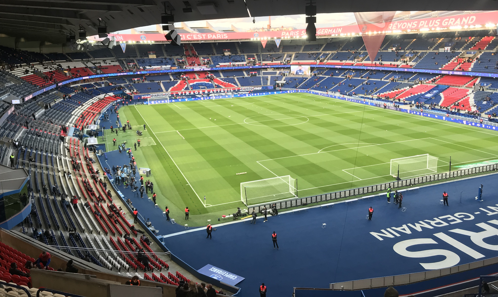
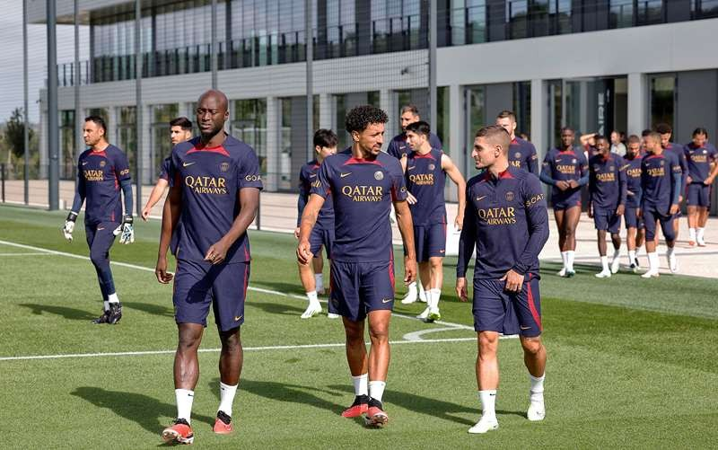

PARIS SAINT-GERMAIN
BENEFICIOS DE ASOCIARSE

Viví el PSG desde adentro
Convertirte en socio del Paris Saint-Germain significa mucho más que apoyar a tu equipo favorito: es ser parte activa del club. Accedé a entradas exclusivas para partidos en el Parque de los Príncipes, con prioridad de compra y precios preferenciales. Ya sea en la Ligue 1, la Champions League o cualquier otra competición, tu lugar en las tribunas está asegurado antes que nadie.

Beneficios únicos y experiencias VIP
Como socio, desbloqueás acceso a eventos especiales, encuentros con jugadores, visitas guiadas al estadio y merchandising oficial con descuentos. Además, podrás participar en sorteos, experiencias personalizadas y contenidos exclusivos pensados para los verdaderos fanáticos. Estar cerca del equipo nunca fue tan real.

Una comunidad global, una misma pasión
Unirte como socio del PSG es entrar a una familia de millones de hinchas alrededor del mundo. Formá parte de una red de seguidores que comparten tu pasión por los colores, con acceso a una plataforma digital exclusiva, foros, actividades sociales y oportunidades para representar al club en eventos internacionales. Tu pasión traspasa fronteras.
EXPERIENCIAS DE NUESTROS SOCIOS

"Ser socio del PSG fue una de las mejores decisiones que tomé como fanático. Pude asistir a partidos increíbles con prioridad en la compra de entradas y vivir el ambiente del Parque de los Príncipes como nunca antes. Además, los descuentos en la tienda oficial y las experiencias exclusivas hacen que realmente te sientas parte del club. Es mucho más que ver fútbol, es pertenecer."
— Julián M., socio desde 2022
"Lo que más valoro de ser socia del PSG es la conexión real con el equipo. Me tocó participar en un evento virtual con jugadores del plantel y fue inolvidable. También me encanta la comunidad de hinchas que se forma entre socios, siempre hay actividades, sorteos y novedades. Si amás al PSG, no hay nada como formar parte oficial del club."
— Camila R., socia internacional desde 2023
"Ser parte del PSG como socio me permitió cumplir el sueño de ver a mi equipo desde la tribuna con entradas aseguradas, incluso en partidos importantes. Todo está pensado para que vivas una experiencia premium: desde la atención al socio hasta el contenido exclusivo que recibimos cada mes. Es un privilegio que todo fan debería tener."
— Tomás E., socio desde 2021